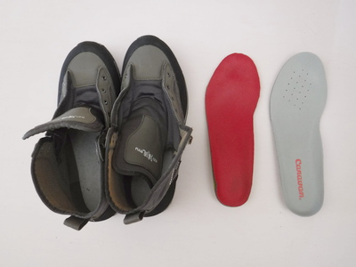
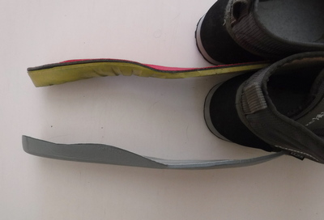
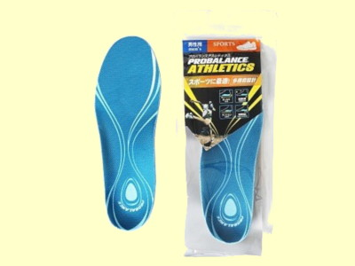

ティップス
釣りの前夜に ウェーディングシューズのインナーソール交換
もうずいぶん昔の事ですが、ネットで海外のフライフィッシングの記事をつらつらと眺めていた時に、ウェーディングシューズのインナーソールを交換すると良い、という Tips を書いたページを見つけました。今、そのページのブックマークが残っていなくて紹介できないのが残念ですが、概要としては
一般的なウェーディングシューズに付属しているインナーソールは、薄くてクッションが少なく、土踏まずや踵をホールドする性能に劣っているので、登山用あるいはスポーツ用として販売されている専用のインナーソールに交換した方が、一日の釣りの疲労が軽減される、
というものでした。
この記事を読んでから、僕は名古屋の東急ハンズへ行ったおりに靴用品のコーナーで、SOFSOLE というメーカーのスポーツ用インソールを買って来ました。そしてウェーディングシューズに最初から入っていたインソールを取り出し、そのサイズに合わせて新しいインソールをカットし、入れ替えました。値段は確か2,000円ほどだったと思いました。靴本体の価格を思えばけっこうな値段ですが、交換しただけの価値はあったと思います。靴のフィット感も明らかに向上しました。2010年のNZ釣行では、かなり長時間の林道歩行を強いられましたが、ウェーディングシューズの歩き心地はとても良かったです。
以下の写真は、昨年購入したキャラバン製のラバー底ウェーディングシューズと、SOFSOLE製のインナーソールです。


専用のインナーソールは２層構造になっているのと、土踏まず、踵の部分が厚くしっかり出来ていることが分かります。
ウェーディングシューズの場合、ストッキングタイプのウェーダーにせよネオプレンソックスを履いてのウェットウェーディングにせよ、靴は水中に没してしまいますし、長時間歩行の時も濡れたままの状態が多いので、インソールの通気性は重要でないと考えられます。土踏まず、踵のサポートとホールド性に留意して選べば良いでしょう。僕の使っているのはすでにデザインが変更されましたが、現在販売されているモデルの中では、「アーチ」というタイプに近いような気がします。
今年の夏に、キャラバン製のフェルト底ウェーディングシューズも購入したのですが、そちらには近所の靴屋で買った、PROBALANCE ATHLETICSというインソールを入れています。1620円でした。

こちらも快適に履けております。費用対効果はかなりあると思いますので、ウェーディングシューズの履き心地に不満のある方や、長時間歩行で疲れるという方は、インソール交換を試してみてはいかがでしょう？
追記：寄る年波のせいで、めっきり足腰の衰えを感じる今日この頃、こんな記事を書いてしまいました。www.paflyfish.com というサイトのこのフォーラムにも、インソールについて、若者やオトシヨリによる要求の違いが意見交換されています。（笑）
ティップス 目次へ
サイトマップ
ホームへ
お問い合わせ